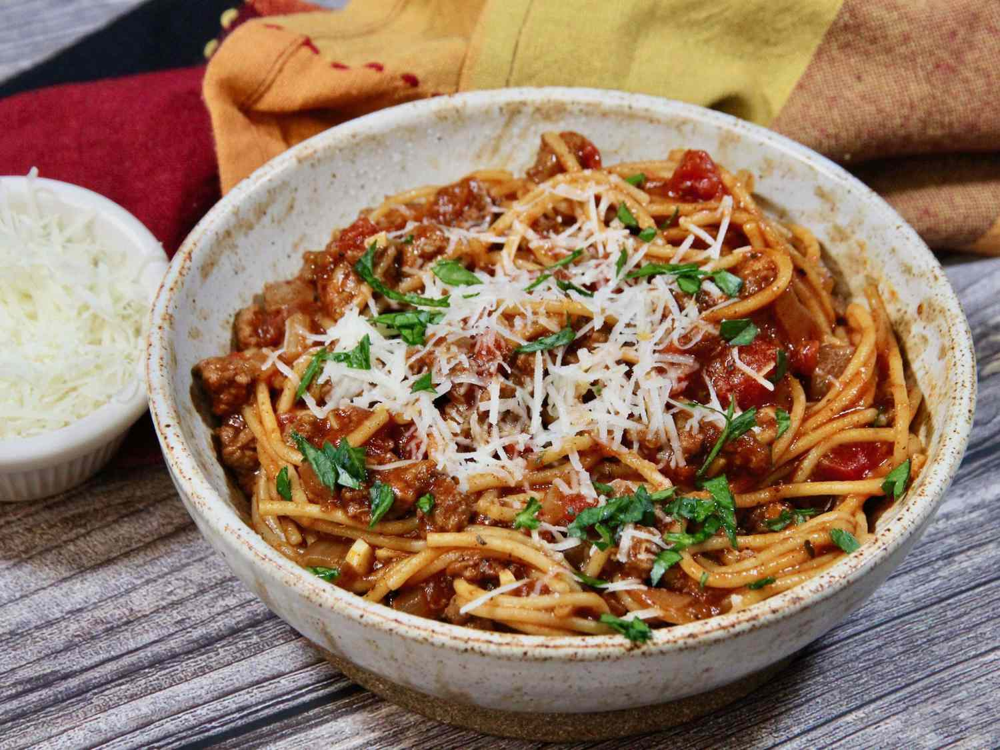

Spaghetti
Home

Discription
My varialtion of an old suthern living recipe - a double recipe will fill a dutch oven and make plenty for an extended family dinner
Ingredients
- 1 pound lean ground beef
- 1 large onion, chopped
- 2 cloves galic, minced
- 1 (14once) can tomato sauce
- 1 (14 once) can petite diced tomatoes
- 2 cups water
- 1 tablespoon chili powder
- 1 teaspoon dried oregano
- 1 teaspoon ground black pepper
- 7 ounces whole wheat spaghetti
- 1/4 cup grated Parmesan cheese, or to taste(optional)